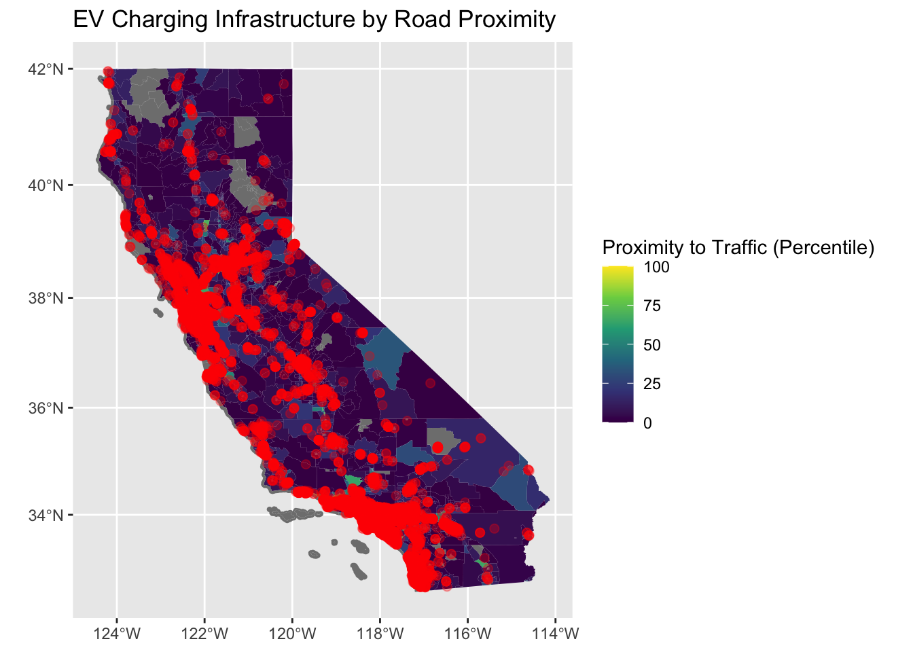
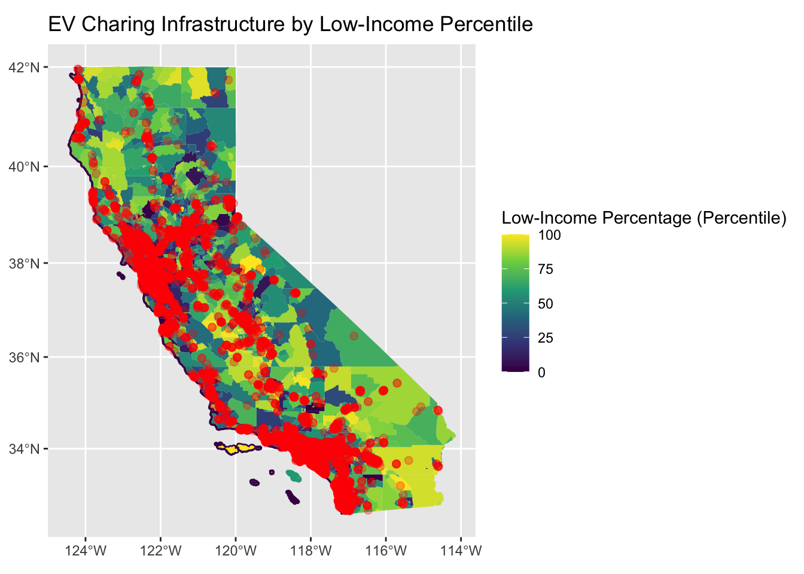
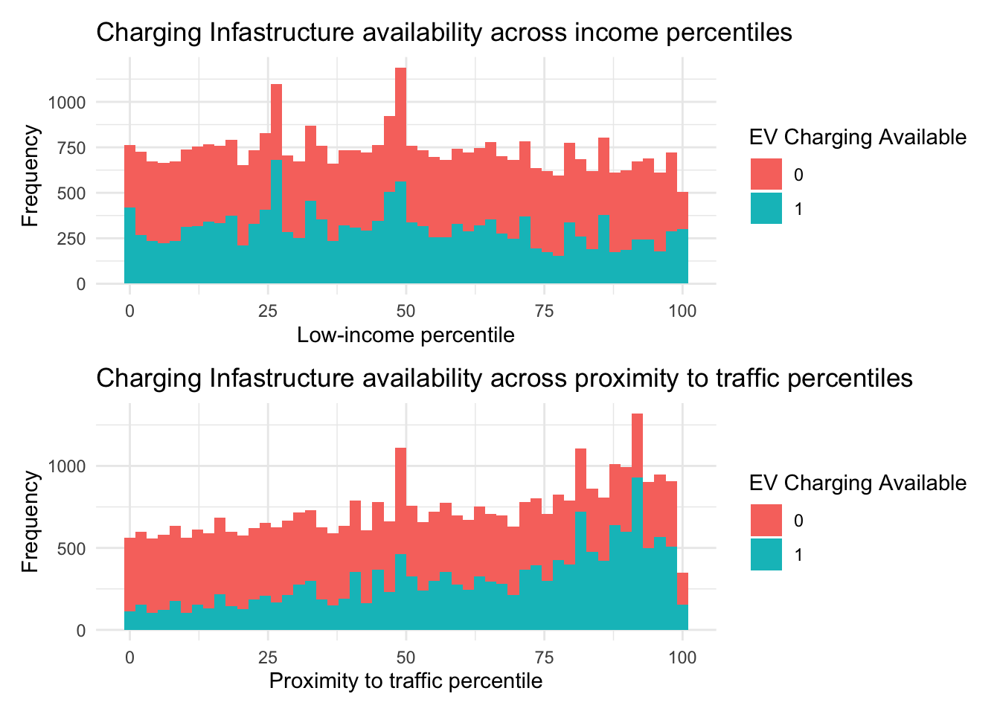
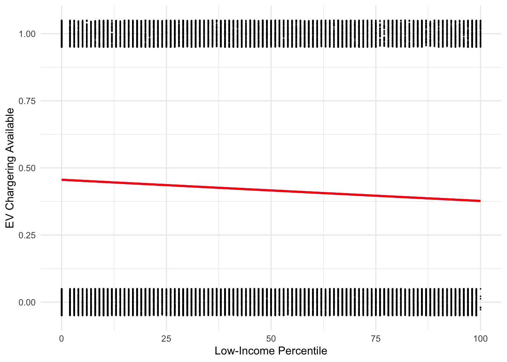

In this analysis I explore inequality trends in electric vehicle (EV) charging network distribution in California. An earlier study from 2020 on this topic identified disparities across race and income in EV charging infrastructure [1]. However, we have seen a 136 % increase in new zero-emissions vehicle (ZEV) sales and 33 % increase in charging stations deployment in California since the study was published [2]. In my analysis I aim to identify whether the earlier trends of inequality in EV infrastructure deployment persist.
Research Question:
Are electric vehicle charging stations less likely to be installed in low-income communities in comparison to higher-income ones?
Significance
Lack of EV charging infrastructure is one of the primary barriers to EV adoption among the population. The Advanced Clean Cars II regulations mandate that all new vehicle sales in California should be ZEV by 2035 [3]. Equitable distribution of EV charging infrastructure is critical to prevent low income and disadvantaged communities from being left behind during the transition to a green economy in California.
Data
I used the following two datasets in the analysis.
Dataset 1: Alternative Fuels Data Center: Electric Vehicle Charging Station Locations.
National Renewable Energy Laboratory (NREL) maintains a comprehensive database of EV charging stations across the United States and Canada. It encompasses over 70 different attributes. Data is available to download via API [4].
Dataset 2: The United States Environmental Protection Agency’s EJScreen data.
EJScreen stands for Environmental Justice Screening and Mapping Tool [5]. According to the developer’s documentation “EJSCREEN is an environmental justice mapping and screening tool that provides the U.S. Environmental Protection Agency (EPA) with a nationally consistent dataset and approach for combining environmental and demographic indicators.” [6] It includes 12 environmental indicators, 6 demographic indicators and 12 EJ indexes. The scope of the analysis was limited to the the following two socio-economic indicators:
- proximity traffic
- low income indicators in the
Additional details and metadata are available on EPA website.
Problem Setup
Scope
The scope of the analysis is limited to the state of California. The analysis did not include the differentiation between urban vs rural areas and didn’t account for EV ownership.
Assumptions
census blocks with the ratio of 0.05% of level 2 or DC charging ports were identified as having EV charging available. This assumes there is at least 1 level 2 or DC charging port per 2000 people.
level 1 charging ports alone were considered insufficient for public charging infrastructure to incentivize EV ownership.
Terminology
EV: electrical vehicle
EV charging station: equipment that connects an electric vehicle (EV) to a source of electricity to recharge electric cars, neighborhood electric vehicles and plug-in hybrids.
Charging port: the system within a charger that charges one EV. A charging port may have multiple connectors, but it can provide power to charge only one EV through one connector at a time. One charging station can have multiple ports.
Method
Set up hypotheses: NULL and Alternative.
Perform data exploration to identify an optimal dependent variable.
Define statistical model
Apply linear model with multi-beta parameters and check the model fit.
Apply logistical (binary) model with multi-beta parameters if linear model fit is not suitable.
Limitations
Parameters such as EV ownership, approvals process, grid infrastructure were not included in the analysis.
Only income was used as a socio-economic indicator.
Analysis
Hypothesis
The analysis is based on the following hypotheses:
H0 (Null Hypothesis): Income level does not have an impact on EV charging infrastructure within a census block area, even when controlling for proximity to traffic.
HA (Alternative Hypothesis): The probability that EV charging infrastructure is available within a census block area with a higher level of low-income households is lower, even when controlling for proximity to traffic.
Setup
I used the following libraries throughout the analysis:
To start, I downloaded the two datasets from NREL and EPA EJScreen (refer to the data section). Since both datasets had spacial attributes and no other attributes in common, I used spatial joins and subsetting to combine them into a single dataset. Following this, I converted the final dataset into a dataframe by eliminating geometries. This allows to enhance performance of the subsequent steps by reducing the number of datapoints to process.
EV charging data import and wrangling:
Code
# Get charging stations for California# Specify API endpoint and parametersapi_url <-"https://developer.nrel.gov/api/alt-fuel-stations/v1"api_params <-list(format ="json", api_key = api_key, status ="E", # E = charging stations in operationaccess ="public",fuel_type ="ELEC",cng_vehicle_class ="LD", # LD = light duty vehiclescountry ="US",state ="CA",limit ="all")# Construct the full URL with parametersrequest_url <-modify_url(api_url, query = api_params)# Make a GET request to the APIresponse <-GET(request_url)# Extract the fuel_stations data from the responsefuel_stations_df <-content(response, "parsed")$fuel_stations# Convert the list to a dataframefuel_stations_df <-as.data.frame(do.call(rbind, fuel_stations_df)) # Select the fields for analysisfuel_stations_df_clean <- fuel_stations_df %>%filter(!is.na(fuel_type_code)) %>%select('id', 'access_code','owner_type_code', 'open_date', 'restricted_access', 'maximum_vehicle_class','facility_type', 'city','state','zip','ev_workplace_charging', 'ev_level1_evse_num', 'ev_level2_evse_num', 'ev_dc_fast_num' , 'longitude', 'latitude')# Convert data frame to sf objectfuel_stations_sf <- fuel_stations_df_clean %>%st_as_sf(coords =c("longitude", "latitude"), crs =4326)# identify which points are outside the boundarie of Californiacalifornia_bbox <-st_bbox(c(xmin =-124.409591, ymin =32.534156, xmax =-114.131211, ymax =42.009518), crs =st_crs(fuel_stations_sf))ca_ev_sf <- fuel_stations_sf %>%st_set_crs(st_crs(california_bbox)) %>%# Set CRS to the same as your datast_crop(california_bbox) # Crop to the bounding box of California
EJScreen data import and wrangling:
Code
# read in geodatabase of EJScreen data at the Census Block Group levelejscreen <-st_read(file.path(rootdir,'/data/EJSCREEN_2023_BG_StatePct_with_AS_CNMI_GU_VI.gdb/'))ejscreen_meta <-st_read(file.path(rootdir, "data/EJSCREEN_2023_BG_Columns.xlsx"))# transform ejscreen into sf objectejscreen_sf <-st_as_sf(ejscreen)# clean ejscreenejscreen_sf_clean <- ejscreen_sf %>%select('ID', 'STATE_NAME', 'ST_ABBREV', 'CNTY_NAME', 'PTRAF', 'P_PTRAF', 'P_LOWINCPCT', 'LOWINCOME','LOWINCPCT', 'ACSTOTPOP', 'P_UNEMPPCT', 'P_PEOPCOLORPCT', 'P_UNEMPPCT', 'P_PNPL', 'P_PRMP', 'P_PTSDF') %>%rename(census_block_id ='ID') %>%clean_names()# filter EJ to California state ejscreen_ca_sf <- ejscreen_sf_clean %>%filter(state_name =='California')
Before proceeding to the modeling steps, I visualized the data to ensure that we are working with the accurate datasets.


Statistical Modeling
In order to proceed with the modeling, I added a new binary variable to the dataset to define whether a given census block had or didn’t have EV charging available:
# Set census blocks that have at least 0.05% of level 2 or DS ports per capita to 1, else to 0ports_per_capita_clean_logit <- ports_per_capita_excl_level1_clean %>%mutate(chargers_available_per_capita =case_when( total_ports_capita_pct >0.05~1, total_ports_per_block <=0.05~0 )) %>%select(-id,-total_ports) %>% na.omit
EV Charging Availability per Census Block, California
Census Block ID
Total Ports per Block
Total Ports Capita Pct
P_ptraf
P_lowincpct
EVSE Available
060014001001
1
0.0509424
27
26
1
060014001002
0
0.0000000
88
17
0
060014002001
0
0.0000000
91
8
0
060014002002
0
0.0000000
96
27
0
060014003001
0
0.0000000
93
6
0
060014003002
2
0.1232286
85
17
1
Basic data visualization
To visualize the distribution of EV infrastructure across the percentiles for low income and proximity to traffic, I used histogram:

From the graphs, we observe a marginal decrease in available EV infrastructure as the percentile of low-income households within a census block increases. Additionally, there is a substantial increase in the availability of EV charging infrastructure with closer proximity to traffic.
Let’s run logarithmic regression to confirm whether out intuition is correct.
mod_ev_multi =glm(chargers_available_per_capita~p_lowincpct+p_ptraf, data = ports_per_capita_clean_logit, family ='binomial')gg =ggplot(data = ports_per_capita_clean_logit, aes(x = p_lowincpct, y = chargers_available_per_capita)) +geom_jitter(width =0, height =0.05, alpha =0.8, size =0.1) +geom_smooth(method ='lm', se =FALSE) +theme_minimal()log_g <- gg +geom_smooth(method ='glm', se =FALSE, color ='red', method.args =list(family ='binomial')) +labs(x ="Low-Income Percentile", y ="EV Chargering Available")
Interpretation:
`geom_smooth()` using formula = 'y ~ x'
`geom_smooth()` using formula = 'y ~ x'

Coefficients
term
estimate
std.error
statistic
p.value
(Intercept)
-1.1166684
0.0295272
-37.81830
0
p_lowincpct
-0.0052204
0.0003880
-13.45622
0
p_ptraf
0.0186964
0.0003952
47.31408
0
Coefficients:
Intercept: according to the model, when both low income percent percentile and proximity to traffic percentile are zero, the estimated log-odds of EV infrastructure availability in a given census block is -1.15683. This intuitively makes sense, since we typically would not expect the need of EV charging (or it would be very low) if a census block is remote.
p_lowincpct: this indicates that with 1 percentile increase in low-income percent percentile in a census block controlling for proximity to traffic percentile, we estimate -0.00549 change in log-odds of EV charging availability. Again, this makes sense and alignes with our Alternative Hypothesis. In general, we would expect few EV charging stations in low-income communities.
p_ptraf: this indicates that with 1 percentile increase in proximity to traffic percentile in a census block controlling for low-income percent percentile, we estimate 0.01919 change in log-odds of EV charging availability. This alignes with our experience and intuition, since we usually expect more EV charging stations in close proximity to traffic.
p-value: p-value is are well below 0.05 significance level, indicating high statistical significance of all the coefficients in predicting the availability of EV charging infrastructure. Therefore, we can reject the Null Hypothesis and conclude that there is a relationship between a low-income and ev charging infrastructure availability even when controlling for proximity to traffic.
Findings
According to the regression results, we can conclude that the probability of having EV charging infrastructure in the census blocks with more low-income households is lower in comparison to higher income census blocks. However, the values of the coefficients are low and from the graphs we observe that there is a rather small gap in EV infrastructure availability based on income distribution.
Additional analysis is required to confirm the findings by including other variables in the model, such as race, unemployment, EV ownership ratio.
[1] Hsu, Chih-Wei, and Kevin Fingerman. “Public Electric Vehicle Charger Access Disparities across Race and Income in California.” Transport Policy 100 (January 1, 2021): 59–67. https://doi.org/10.1016/j.tranpol.2020.10.003.
[2] Commission, California Energy. “ZEV and Infrastructure Stats Data.” California Energy Commission. California Energy Commission, current-date. https://www.energy.ca.gov/files/zev-and-infrastructure-stats-data.
[3] “Advanced Clean Cars II | California Air Resources Board.” Accessed November 10, 2023.https://ww2.arb.ca.gov/our-work/programs/advanced-clean-cars-program/advanced-clean-cars-ii.
[4] All Stations API | NREL: Developer Network. https://developer.nrel.gov/docs/transportation/alt-fuel-stations-v1/all/. Accessed 15 Dec. 2023.
[5] US EPA, OEJECR. Purposes and Uses of EJScreen. 20 Oct. 2014, https://www.epa.gov/ejscreen/purposes-and-uses-ejscreen.
[6] EJSCREEN: Environmental Justice Screening and Mapping Tool | U.S. Climate Resilience Toolkit. https://toolkit.climate.gov/tool/ejscreen-environmental-justice-screening-and-mapping-tool#. Accessed 15 Dec. 2023.